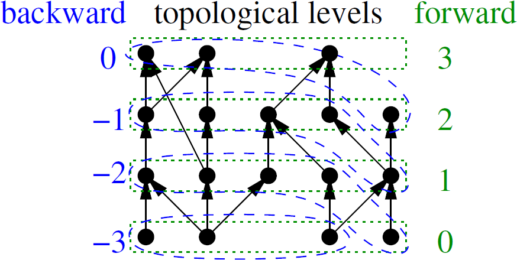
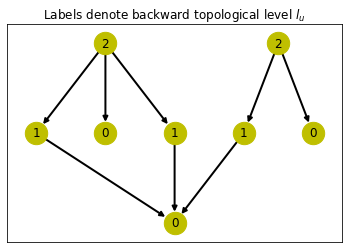
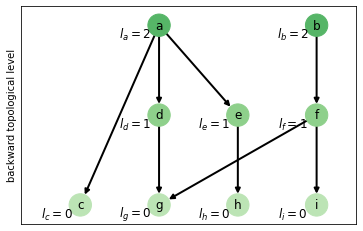

The autoreload extension is already loaded. To reload it, use:
%reload_ext autoreloadThe autoreload extension is already loaded. To reload it, use:
%reload_ext autoreloadThe backward topological level of a vertex \(v\) (denoted as \(l_v\)) can be defined as its depth: - if \(v\) has no immediate predecessors (has no outgoing edges, i.e. its out-degree is zero - it is a sink),
then \(l_v = 0\), - otherwise it is maximum of levels of its immediate predecessors plus one:
\(l_v = \max\limits_{u\colon (v,u)\in E}(l_u)+1\).
In other words it is the maximum length of any path starting from vertex \(v\).
The backward topological level increases at least by one when going in the opposite direction to edges (going backwards).
This reachability label is immutable with respect to the graph growth by adding nodes.
The forward topological level of a vertex \(v\) (denoted as \(L_v\)) is defined in the following way: - if \(v\) has no immediate parents / successors (it has no in-going edges, i.e. its in-degree is zero – it is a source),
then \(L_v = 0\), - otherwise it is maximum of forward levels of its immediate successors plus one,
that is \(L_v = \max\limits_{u\colon (u,v)\in E}(L_u + 1)\)
In other words it is maximum length of any path ending at vertex \(v\).
The forward topological level increases by at least one when going in the direction of edge (going forwards).
The image below shows an example directed graph (DAG), marked with forward and backward topological levels (forward marked in green and backward marked in blue). This example is taken from the Figure 2 in the PReaCH paper.

The forward level \(L_v\) of a vertex induces its topological ordering: if \(u\) precedes \(v\) in the topological ordering of DAG \(G\) and \(u \neq v\), then \(L_u < L_v\).
the alternative notation for \(l_u\) is \(l(u)\), and for \(L_u\) is \(L(u)\).
In other words the following observation holds:
for forward topological levels (defined as having level equal 0 for source nodes): \[\forall u \neq v \in V : L(u) \geq L(v) \implies u \nrightarrow v \]
for backward topological levels (defined as having level equal 0 for sink nodes): \[\forall u \neq v \in V : l(u) \leq l(v) \implies u \nrightarrow v \]
We can also use a weaker condition, which has the advantage of avoiding corner cases of checking whether \(u = v\) / \(u \neq v\):
for forward topological levels (defined as having level equal 0 for source nodes): \[\forall u \in V, v \in V : L(u) > L(v) \implies u \nrightarrow v \]
for backward topological levels (defined as having level equal 0 for sink nodes): \[\forall u \in V, v \in V : l(u) < l(v) \implies u \nrightarrow v \]
It also helps in the case where newer commits do not have backward topological levels computed, and we want to use topological levels even in the case where at least one vertex in reachability query is new.
All this means that both forward and backward topological levels can function as negative-cut filter (reducing the search space).
Definition: The level of a vertex \(v\) (denoted as \(l_v\)) can be defined as its depth: if \(v\) has no immediate predecessors, then \(l_v = 0\), otherwise it is maximum of levels of its immediate predecessors plus one: \[l_v = \max\limits_{u\colon (v,u)\in E}(l_u)+1\]
/opt/hostedtoolcache/Python/3.9.16/x64/lib/python3.9/site-packages/fastcore/docscrape.py:225: UserWarning: Unknown section Parameters:
else: warn(msg)
/opt/hostedtoolcache/Python/3.9.16/x64/lib/python3.9/site-packages/fastcore/docscrape.py:225: UserWarning: Unknown section Returns:
else: warn(msg)find_levels (DG, attr=None)
Find levels (generation number) of all vertices in graph G
The backward topological level of a vertex v, which we denote as l_v or l(v), can be defined as its depth, or the length of longestt path to the leaf (sink) node.
The levels / generation number information can be optionally saved in the graph, under given node attribute (name given by attr parameter).
NOTE: whether for nodes without outcoming edges (without any neighbours) l_v is defined to be 0, or defined to be 1, is a matter of convention. Here the same convention as in the FELINE paper is used.
NOTE: for compatibility with forward topological levels sometimes backward topological levels are used with negative sign applied, like in the PReaCH paper.
find_levels(graph)Test that find_levels() works on known example graphs from example_graphs
Use the small DAG from the FELINE paper as a test
{'h': 0, 'c': 1, 'd': 0, 'e': 1, 'a': 2, 'f': 1, 'g': 0, 'b': 2}sd=graphs.small_DAG_FELINE()
sd.lvl=find_levels(sd)
sd.pos={'a':(2,3),'b':(4.5,3),'c':(1,2),'d':(2,2),'e':(3,2),'f':(4,2),'g':(5,2),'h':(3,1)}
nx.draw_networkx(sd, pos=sd.pos,
with_labels=False,
node_size=500,width=2.0,node_color='y')
nx.draw_networkx_labels(sd, pos=sd.pos,
labels=sd.lvl)
plt.title('Labels denote backward topological level $l_u$')
plt.draw()
Use the graph from Figure 9 in the FELINE paper
lf=graphs.levels_DAG_FELINE()
# backward level
lf.lvl_expected={
'c':0,'g':0,'h':0,'i':0,
'd':1,'e':1,'f':1,
'a':2,'b':2
}
lf.lvl=find_levels(lf)
# positions of nodes
lf.tree={
'a':(2,2),'b':(4,2),
'd':(2,1),'e':(3,1),'f':(4,1),
'c':(1,0),'g':(2,0),'h':(3,0),'i':(4,0)
}
# configure plot
#plt.axis('off')
plt.ylabel('backward topological level')
#plt.subplots_adjust(left=0,right=1.2)
plt.xlim(left=0.25,right=4.5)
nx.draw_networkx(lf,
pos=lf.tree,
nodelist=list(lf.lvl.keys()),
node_color=list(lf.lvl.values()),
cmap=plt.cm.Greens,
vmin=-2,vmax=5,
node_size=500,width=2.0)
nx.draw_networkx_labels(lf,
pos={k: (v[0]-0.3,v[1]-0.1) for (k,v) in lf.tree.items()},
labels={k:'$l_'+str(k)+'='+str(l)+'$'
for (k,l) in lf.lvl.items()})
plt.draw()
TODO: Interactive visualization